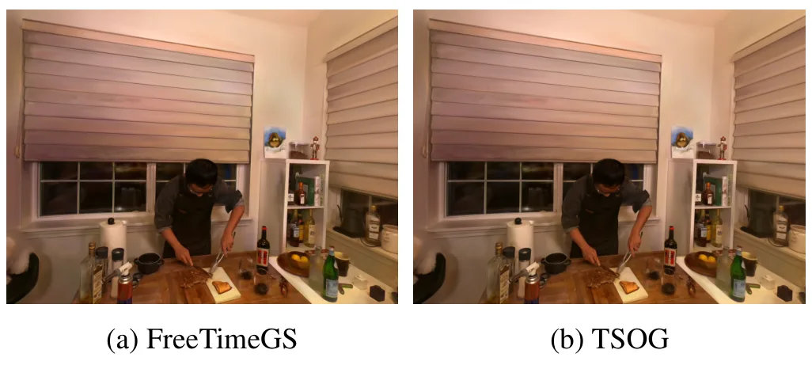
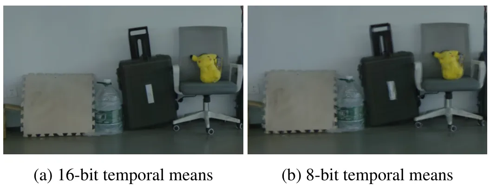
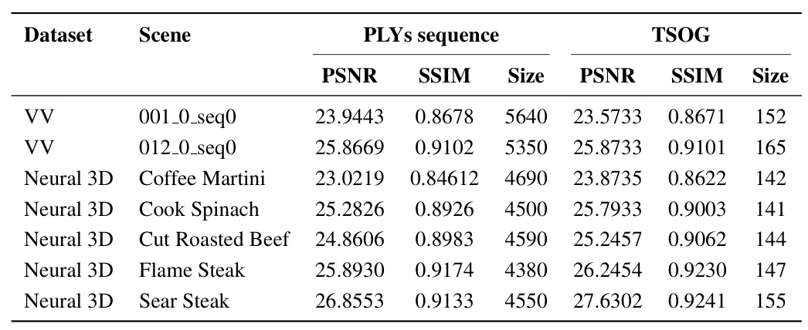
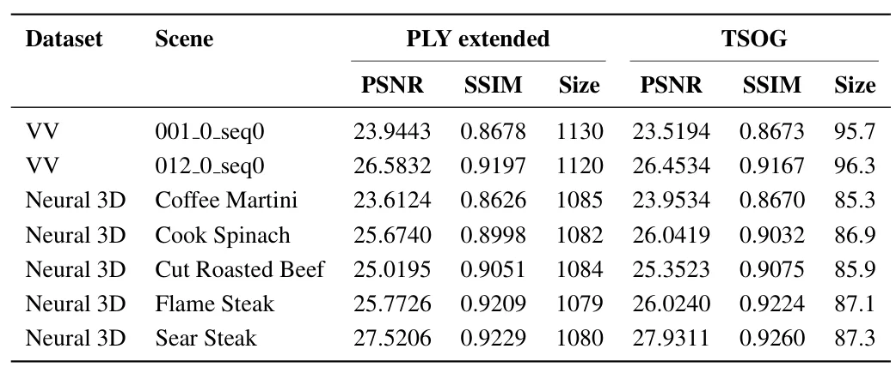

TSOG：时空有序高斯表示格式TSOG: A Format For Temporally And Spatially Ordered Gaussians
直接关联动态 3DGS 地图的存储与传输，模型无关且压缩幅度显著；当前评价基线有限，需核查随机访问、解码成本及复杂运动下的时间一致性。
一句话工作总结
以统一索引和时空参数化把动态 Gaussian 属性编码成图像数据，实现超过 90% 的 4DGS 文件压缩。
摘要
TSOG 将 Spatially Ordered Gaussians（SOG）扩展到时间域，为 4D Gaussian Splatting 引入 timeline 属性，以及几何和外观属性的时间参数化。每个 Gaussian 被赋予唯一索引，属性值编码为与索引对齐的图像数据。该有损格式与具体 4DGS 模型解耦，同时兼容离散和连续动态表示。基于 PLY 序列与 FreeTimeGS 的实验显示，文件体积缩减超过 90%，PSNR 变化范围为 -0.42 至 +0.85 dB。
We propose Temporally and Spatially Ordered Gaussians (TSOG), a format for efficient representation of 4D Gaussian Splatting (4DGS) content. TSOG extends the Spatially Ordered Gaussians (SOG) framework to the temporal domain by introducing a timeline attribute and temporal parameterization of geometry and appearance attributes. Similar to SOG, TSOG is a lossy format that assigns each Gaussian a unique index and encodes attribute values as index-aligned image data. TSOG is model-agnostic, extensible, and compatible with both discrete and continuous 4DGS representations. Evaluation using a PLYs sequence and FreeTimeGS as baselines, serving as simplistic and state-of-the-art 4DGS representations respectively, shows file size reductions exceeding 90%, with PSNR differences ranging between -0.42 and +0.85 dB. These results demonstrate substantial file size savings with minimal quality degradation, enabling efficient representation, storage, and delivery of dynamic scenes for next-generation 4D content.
中文解读摘录
图表/页面预览

{kind=link}

{kind=link}

{kind=link}
{kind=link}

{kind=link}
